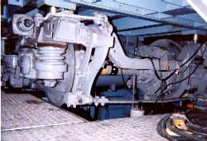

Electric Train
|  | |
Anti-slip Re-adhesion Control for Electric Trains
Train driving force is transmitted by the tangential force between the wheel and the rail. The tangential force is a function of the tangential force coefficient between the axle weight of train and wheel and rail. Under wet or snow railway conditions, the wheel causes the slip by decreased of the tangential force coefficient. Therefore, torque generated by the motor might be unable to fully exhibit as a driving force. To overcome this problem, we propose an adhesion control that depending on the motor torque by composing the disturbance observer. The validity of the proposed method confirms by the numerical simulations and the bogie test using a bogie of actual train.
A Control Method for Preventing Driving Wheel Flat of Electric Trains
If electric trains put a strong brake under wet or snow railway track conditions, driving wheels experiences skidding. In this case, it is possible for the driving wheels to become locked. This causes damage to the wheel tread that may result in what is called a “wheel flat”. The wheel flat is undesirable from the perspective of vehicle maintenance. Wheel flats must be prevented because they require re-profiling of the wheel tread. In our laboratory, we have studied about a control method focused on a cooperative control of an electric brake and an air brake to prevent the occurrence of a driving wheel flat. Assuming the train using IPMSM, we have experimented at equivalent experimental equipment to simulate the drive system.